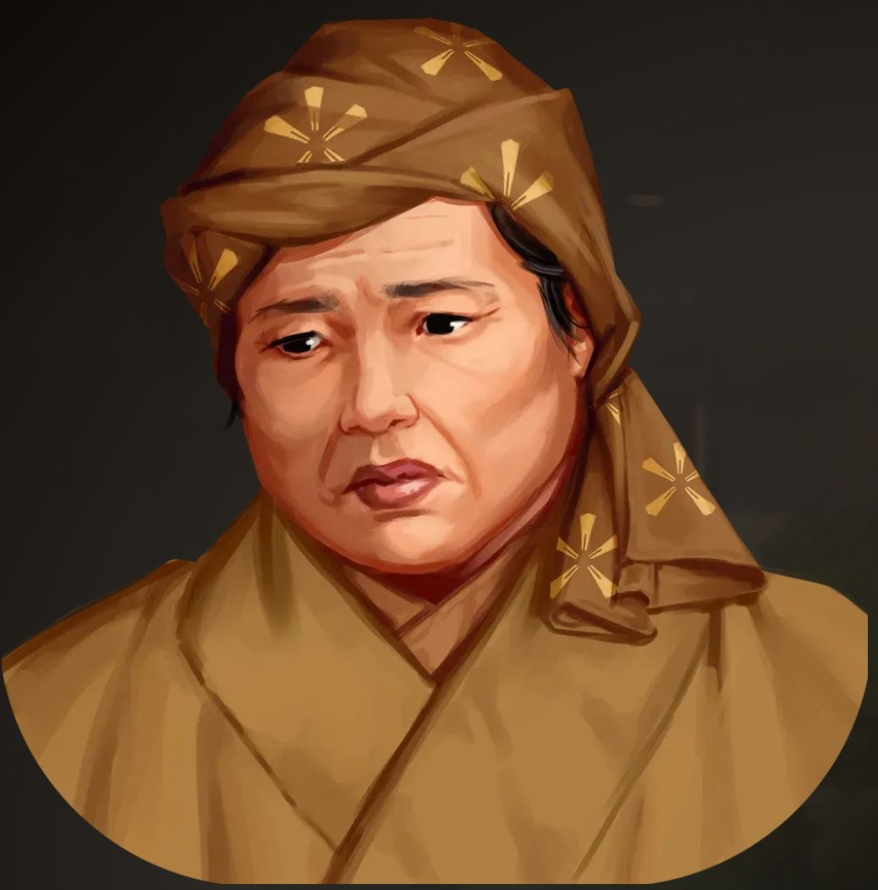
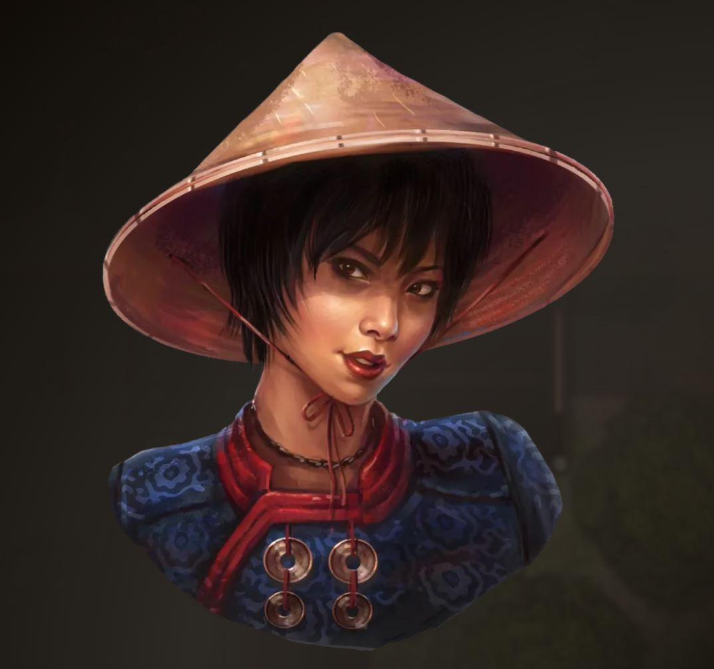

Huo Tian-Zhe
Second Best
Alkymistisk smed fra Karahai med en ironisk sans for humor — butikkens navn er hans egen vits på sin bekostning. Sælger bomber og ammunition. Kan nu levere moderate bombs og elixirs.
Willowshore ligger ved Ceiba-flodens bred, omkranset af skov, marker og et gammelt piletræ, der var her længe før byen selv. Siden sommerens første dag har byen levet bag en tåge, ingen kan forklare — og som, så vidt nogen ved, kun en enkelt rejsende handlende kan krydse. Hvad der end ligger derude mod vest, er det for nu Willowshores egen sag at finde ud af.
Efter en hård sommer går byen ind i efteråret med fornyet styrke. Skaderne er ikke glemt — og nogle af tabene kan aldrig gøres helt op — men Willowshore står markant stærkere, end den gjorde for blot få måneder siden. Det skyldes dets borgere, dets ledere, og en lille gruppe helte, der valgte at kæmpe.
Willowshore ledes for tiden af Granny Hu Ban-niang fra Ceiba-Duyue Exchange, efter en lederskabsduel mellem hende og Southbanks gamle patriark, Shou Matsuki. De to halvdele af byen — Northridge og Southbank — samarbejder om genopbygningen. Reputation: Northridge 10 · Southbank 9.
Willowshore deler sig i to — Northridge på flodens nordbred, Southbank mod syd. Herunder finder du byens to sider og et interaktivt kort over alle dens steder.
Handel, flod og forvaltning. Hjemsted for Handelskontoret (Ceiba-Duyue Exchange), vagtbarakkerne og de fleste af byens værksteder. Northridge har klaret sig godt i kraft af organisation og netværk snarere end gamle traditioner.
Folk her taler varmt om jer — I står højt i Northridge.
Gamle familier, gårde og helligdomme. Hjemsted for Matsuki-estate, møllerne og staldene. Southbank holder mere på traditionerne.
Southbank er kommet til at holde af jer — de gamle familier er vundet over.
Dawnstep Bridge forbinder de to sider midt over floden, og Downtown Willowshore i midten — med teater, badehus og byens fængsel/arsenal — hører til på neutral grund.

Folk I har mødt, hjulpet, reddet — eller bare lagt mærke til.
Second Best
Alkymistisk smed fra Karahai med en ironisk sans for humor — butikkens navn er hans egen vits på sin bekostning. Sælger bomber og ammunition. Kan nu levere moderate bombs og elixirs.

Ceiba-Duyue Exchange
Byens nuværende leder, og en tidligere kejserlig vagtkaptajn. Hun styrer Willowshore med overblik og netværk. Der sker sjældent noget i Northridge, hun ikke allerede ved.

Det østre vagttårn
Byvagt, der holdt sin post i det østre vagttårn natten igennem. Skræmt af tågen, men pligtopfyldende — bekymrer sig mest for sin datter og sin mand.

Willowshores guvernør (forsvundet)
Byens udpegede guvernør — nervøs af gemyt, men oprigtigt bekymret for sine borgere. Forsvundet sporløst siden invasionens første dag; hans gods er bare... væk.

Mother's Coil
Byens eneste troldmandslærling, selvlært siden hendes mester Anjal døde. Sidder i det mørke basalttårn med en hel samling gamle bøger — den man spørger, hvis noget er arkant eller okkult.

Ceiba-Duyue Exchange
Granny Hu's højre hånd. Effektiv, loyal og altid til stede, hvis man har et ærinde der.

Hand of Spring-klinikken
Byens læge. Nægtede at flygte, selv da invasionen var værst. Behandler stadig sårede gratis — spørg bare efter "Dami".

"Mama Bao" · dampbolle-boden
Driver byens hyggeligste lille spisested og kender sine stamgæsters appetit bedre, end de selv gør. Da hendes dampboller en morgen begyndte at servere mere end dej, hjalp I hende med at forsone en gammel familieånd — Hinode Akari.

Woodcarver's Guild
Valgt guild master for byens træskærerlav og en usædvanligt dygtig håndværker — selvom hun helst havde været maler eller smykkemager. Det er hende, der kan forvandle peachwood til de sjældne fulu'er, Igawa Jubei bruger.

Southbank · Matsu's Home
Højrøstet gammel ungkarl, der nyder rollen som den gnavne olding, der savner "de gode gamle dage". Lad dig ikke narre — han er en fremragende kok.

Vagtkontoret / Downtown
Kaptajn for Willowshores vagter. Sad selv fanget under invasionens første dage, men er tilbage i fuld gang med at holde byen sikker. For nylig forlovet med jægeren Sumika — et par ingen havde set komme.

Luo and Laws
Advokat med kontor i Downtown. Håndterer testamenter og ejerskab — herunder papirerne på jeres te-hus.

Happy Kappa badehus
Driver byens badehus. Havde en ubehagelig omgang med kappaer i sit eget bad og er stadig lidt rystet over det.

Treesparrow's Rest (Downtown)
Matriark for Sanmi-familien. Reddet under invasionen og forsøger at holde familien tæt sammen.

Matsuki-Estate
Southbanks gamle patriark og byens levende hukommelse. Hans gods fungerede som krisecenter under invasionen. Tabte lederskabsduellen til Granny Hu.

Eternal Blaze Ironworks
Smed og vogter af Eternal Lantern, der har brændt ved byporten i generationer. Også Mahous tante — og efter Mahou's udsagn "pisse sej".

Lady of Souls
Præstinde for Pharasma. Leder byens begravelsesceremonier — der har været flere af dem end nogen ønskede sig denne sommer.

Nine Ear Shrine
Vogter af shrinet helliget Daikitsu. Modtager gerne offergaver — retter med ris er altid et sikkert valg.

Willowshore Stables
Byens dyrlæge og staldejer. Har haft en hård sommer.

Leshy Saloon, Downtown
Leshy med en lille temager-stand i byen. Kender skoven og dens ånder bedre end de fleste mennesker gør — og har selv fået besøg af infiltratorer, der forsøgte at udgive sig for ham.

Det store piletræ, nord for byen
Et ældgammelt piletræ — og den ånd, der bor i det. Er blevet yderst depresiv, efter jeres sidste besøg.

Spider Gate
Byens guardian spirit i generationer — en stor, stenhård edderkop, lige dele grim og sød, præcis som navnet antyder. Forsvandt under invasionen, men er tilbage på sin post.

Hinterlands / ofte i byen
Jæger og god ven af Ghostricers, ofte set ridende på Ugly Cute. Havde længe et godt øje til Tairon, men for nylig kom det frem, at hun snart skal giftes... med Zheng Peng.

Krydser Dawnstep Bridge ind og ud af byen
Rejsende handlende, ankommet dagen efter Willowshores befrielse med en vogn fuld af varer — muligvis magiske. Venlig og gådefuld — og med god grund: personen I mødte i boden, viste sig at være en Noppera-bo i Shinzos skikkelse. Den rigtige Shinzo er endnu ikke set siden imposteren blev afsløret.

Bor fast på teehuset
Byens kat, nu fast bosat hos jer. Spiser gerne onigiri med tun. Måske bare en kat. Måske noget mere.

Bor hos Sumika
Sumikas hund, reddet fra en Lumber Camp langt mod vest. Tairon leverede ham tilbage og han bor nu godt og trygt hos Sumika.


Et ungt par
Hun fra Sanmi-familien i Southbank, han knyttet til Hu-familien i Northridge. Forholdet har aldrig været let. Yuli arbejder nu i Cerulean Teahouse — og er stadig tydeligt sur på Hu Lelong.
En form for questlog...
Den tåge, der holder Willowshore fanget. Muren er tyndest mod vest — og bag den ligger Tan Zuki Monastery, med gammel lore gemt væk. Vi ved nu, hvordan den kan åbnes: Mahou har selve ritualet nedskrevet. Spørgsmålet er ikke længere om, men hvornår.
Heh Shan-Baos gods stod engang i byens midte. Nu er der bare en tom grund. Ingen har set ham siden invasionens første dag.
Kraften bag invasionen. De ansigtsløse er Noppera-Bo — og ifølge en fanget infiltratør kommer der flere til foråret. De vil gøre Willowshore til deres paradis, fordi de ikke kan nå det rigtige bag Wall of Ghosts. Vores gamle teori om "Nindoru" holdt: fiends født af korrumperede reinkarnationscyklusser — og Kugaptee var selv en mægtig én. Han blev besejret ved klosteret af Tan Sui-Jing, der faldt i samme kamp; legenden siger, hun reinkarnerede som et sugi-træ.
En dagbog, fundet i stalden, der beskriver flere forskellige liv — engang et ægteskab med en vis Aliara Matsuki. En gammel slægtning af Edan og Tairon.
Granny Hu's netværk SpiderLily havde Noppera-bo iblandt sig. To af dem tog Edan og Tairons ansigter op til First Long Night Festival, mens de ægte brødre — og Sumika — blev ramt af fireball, faldt ned under scenen og slæbt bort. Alle tre er hjemme igen, og efter festivalen sidder tre Noppera-bo nu fanget i barracks.
Hullet fra scenen førte via en skjult tunnel til et forladt hus fyldt med stjålne forsyninger og et forholdsvis frisk drab med ansigtet ødelagt. Alt er meldt til Granny Hu som har sendt folk ud for at hente de stjålne ting.
Husk at give Yami mad. Det er nok klogt at blive ved med det.
SpiderLily-netværket er virkeligt — og Jin bærer tatoveringen.
Huo Tian-Zhe (Second Best) kan nu skaffe moderate bombs og elixirs. Husk det inden næste kamp.
Mahou har nu ritualet, der åbner Wall of Ghosts. Døren mod vest — mod klosteret og lumbercampen — er reelt låst op.
Jins blodprøve hos Doktor Dami: resultatet er lovet "dagen efter". Husk at følge op.
Hår-ånden i Mama Baos dampboller var Hinode Akari — en gammel familieskyld. Hun er forsonet nu, og der er lovet at ære hendes minde.
Vi har peachwood med hjem fra skoven. Igawa Jubei og Yun Mong-Un kan lave sjældne fulu'er af det.
Noppera-bo-tunnellerne under downtown er muret til. Reden er lukket.